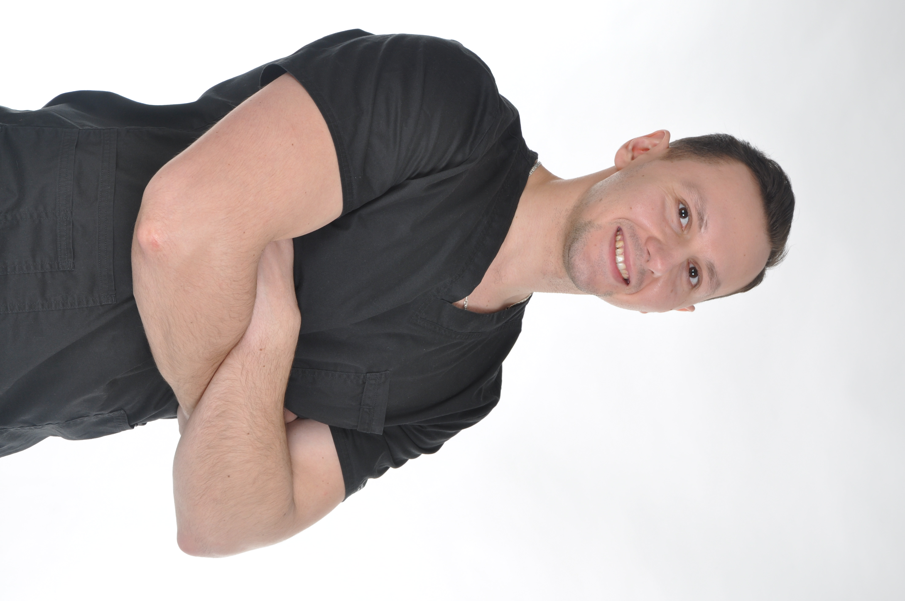

Терапевт · Ортопед · Хирург
16 лет практики · Сложные случаи · Перелечивание

Поставили коронку — болит. Запломбировали канал — опухло. Разберу что пошло не так и исправлю без лишних вмешательств.
ПерелечиваниеПришлите снимок — объясню что вижу, насколько это серьёзно и что делать дальше. До похода в клинику.
Онлайн-консультацияАтрофия кости, неудачные импланты, запущенные каналы — это моя специализация. Берусь за то, от чего другие отказываются.
Сложные случаиРаботаю с дентофобией. Объясняю каждое действие, никакого давления. Многие пациенты приходят именно из-за этого.
ДентофобияПринцип простой: если зуб можно сохранить — сохраним. Не назначаю лишнего, объясняю реальные варианты без запугивания.
Честная диагностикаРассказываю на понятном языке. Показываю снимки, объясняю план. Вы принимаете решение осознанно, а не «потому что врач сказал».
Прозрачность16 лет я веду пациентов как терапевт, ортопед и хирург одновременно. Это значит, что сложный случай я веду сам — от диагностики до результата, без перекидывания между кабинетами.
Я не назначаю лишнего. Если кто-то ошибся до меня — разберу честно и исправлю. Если ситуация кажется безвыходной — найду решение.
Помимо практики я обучаю врачей и клиники: веду курсы по коммуникации и продажам в стоматологии. Поэтому умею объяснять сложное просто.
Не обязательно ехать в клинику чтобы понять что происходит. Пришлите снимок — разберём вашу ситуацию онлайн.
Пришлите снимок на artutkompanets@yandex.ru — как правильно сохранить и отправить файл, смотрите в видеоинструкции в Telegram-канале.
Изучаю КТ, нахожу все проблемные зоны. Обычно в течение суток — иногда быстрее.
Объясняю что вижу, что срочно, что подождёт. Даю конкретный план действий на понятном языке.
Часто пациенты годами ходят с проблемой которую врачи «не замечают» — или наоборот, их пугают лечением которое не нужно. Я скажу как есть.
Полные статьи, разборы снимков и реальные случаи — в Telegram-канале. Там же можно задать вопрос лично.
Консультирую по КТ, отвечаю на вопросы о лечении, помогаю разобраться в сложной ситуации. Там же — полные статьи и разборы реальных случаев.
Написать в Telegram